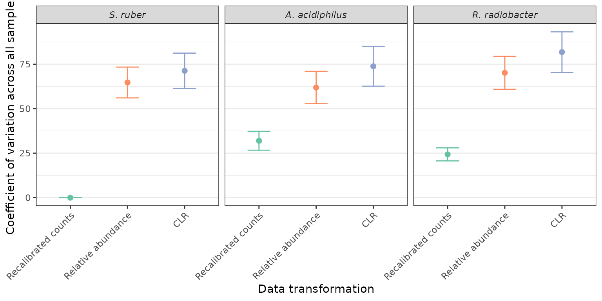

Analysis of the Sammler_2016_16S_spikein dataset
Comparison of coefficient of variation
Source:vignettes/articles/Stammler_2016_16S_spikein.Rmd
Stammler_2016_16S_spikein.Rmd
library(MicrobiomeBenchmarkDataAnalyses)
library(MicrobiomeBenchmarkData)
library(dplyr)
library(tibble)
library(tidyr)
library(biobroom)
library(ggplot2)Data
tse <- getBenchmarkData('Stammler_2016_16S_spikein', dryrun = FALSE)[[1]]Recalibrate with spike-in Salinibacter ruber
spk_bac <- c(
`S. ruber` = 'AF323500XXXX',
`R. radiobacter` = 'AB247615XXXX',
`A. acidiphilus` = 'AB076660XXXX'
)
counts <- assay(tse, 'counts')
s_ruber <- counts[spk_bac['S. ruber'], ]
size_factor <- s_ruber/mean(s_ruber)
SCML_data <- counts
for(i in seq(ncol(SCML_data))){
SCML_data[,i] <- round(SCML_data[,i] / size_factor[i])
}
assay(tse, 'counts_recal') <- SCML_dataExtract data of sipike-in bacteria
spk_bac_tse <- tse[spk_bac,]
rownames(spk_bac_tse) <- names(spk_bac)
spk_bac_tse
#> class: TreeSummarizedExperiment
#> dim: 3 17
#> metadata(0):
#> assays(4): counts counts_recal TSS CLR
#> rownames(3): S. ruber R. radiobacter A. acidiphilus
#> rowData names(1): taxonomy
#> colnames(17): MID26 MID27 ... MID42 MID43
#> colData names(12): dataset subject_id ... country description
#> reducedDimNames(0):
#> mainExpName: NULL
#> altExpNames(0):
#> rowLinks: NULL
#> rowTree: NULL
#> colLinks: NULL
#> colTree: NULLGet tidy data
## sample metadata
# col_data <- tse %>%
# colData() %>%
# as.data.frame() %>%
# rownames_to_column(var = "sample") %>%
# as_tibble() %>%
# select(sample, subject_id, study_condition)
## data for relative abundance
output <- vector("list", length(assays(spk_bac_tse)))
for (i in seq_along(output)) {
data_name <- names(assays(spk_bac_tse))[i]
names(output)[i] <- data_name
output[[i]] <- tidy.RangedSummarizedExperiment(
spk_bac_tse, assay = data_name
) %>%
magrittr::set_colnames(c('taxon', 'sample', data_name))
}
data <- purrr::reduce(output, left_join)
# left_join(col_data) %>%
# relocate(subject_id, study_condition, .after = sample)
DT::datatable(data, filter = 'top')Calculate coefficient of variation
Compare coefficient of variation
cv_res %>%
filter(norm != 'counts') %>%
mutate(norm = ifelse(norm == 'TSS', 'Relative abundance', norm)) %>%
mutate(norm = ifelse(norm == 'counts_recal', 'Recalibrated counts', norm)) %>%
mutate(
norm = factor(norm, levels = c(
'counts', 'Recalibrated counts', 'Relative abundance', 'CLR'
)
)
) %>%
mutate(taxon = forcats::fct_relevel(taxon, 'S. ruber')) %>%
ggplot(aes(reorder(norm, cv), cv)) +
geom_point(aes(color = norm), size = 2) +
geom_errorbar(
aes(ymin = cv - std.error, ymax = cv + std.error, color = norm),
width = 0.4, size = 0.5
) +
scale_color_brewer(type = 'qual', palette = 'Set2') +
facet_wrap(~taxon) +
labs(
y = 'Coefficient of variation across all samples',
x = 'Data transformation'
) +
theme_bw() +
theme(
axis.text.x = element_text(angle = 45, hjust = 1),
panel.grid.major.x = element_blank(),
strip.text = element_text(face = 'italic'),
# legend.title = element_blank()
legend.position = 'none'
)